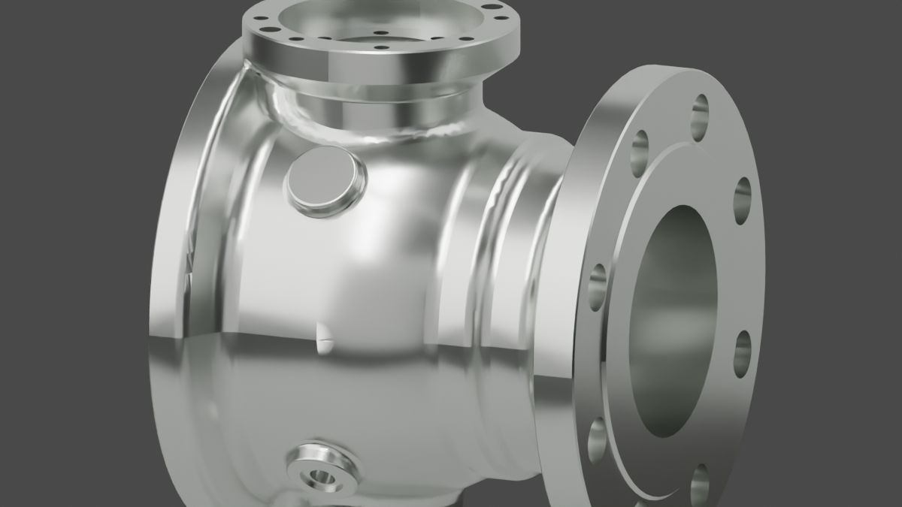
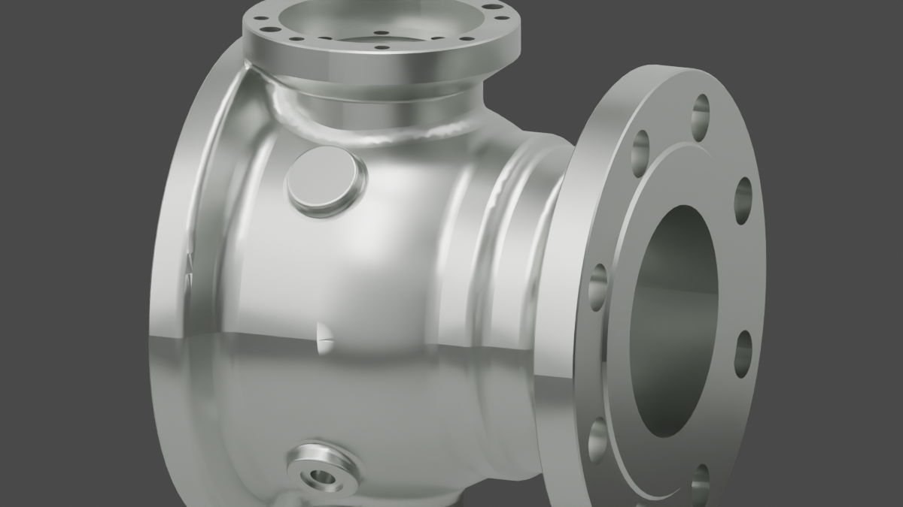
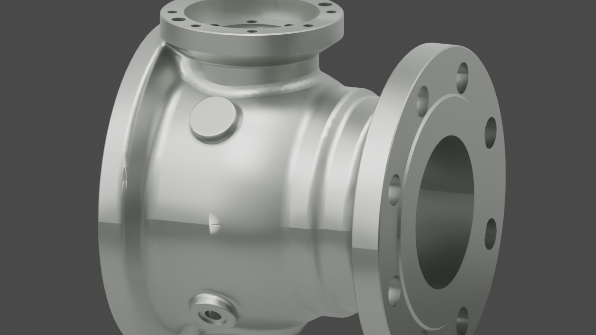
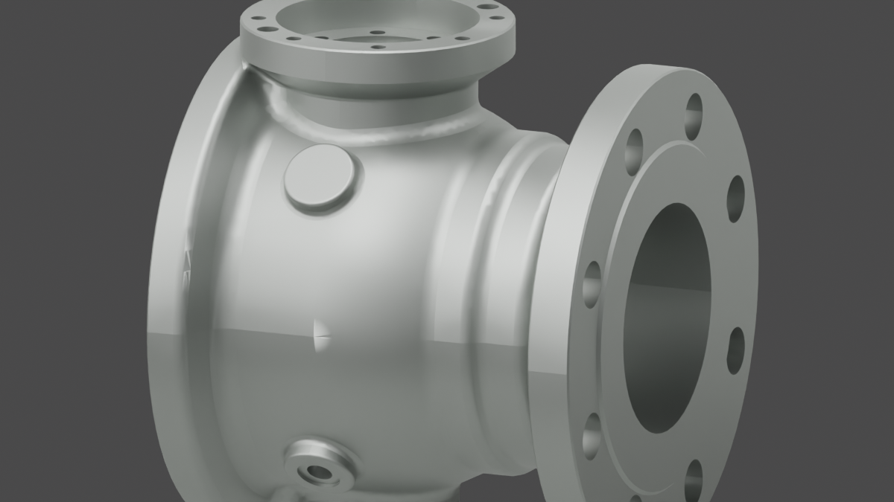
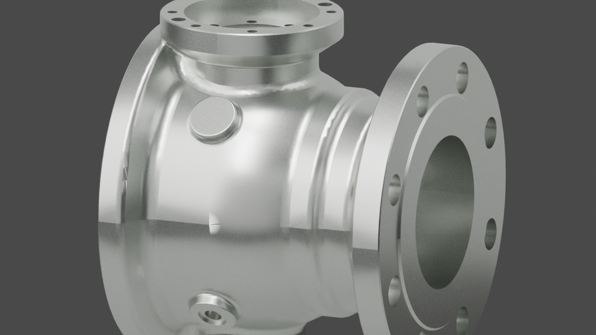
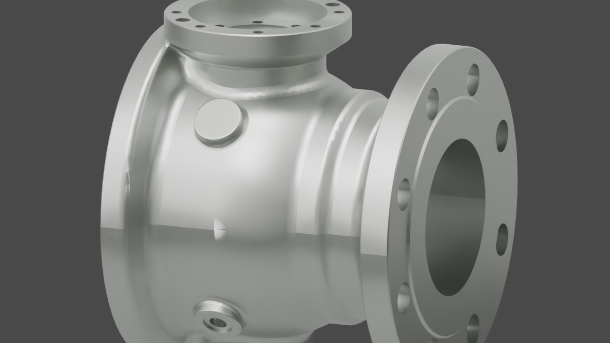
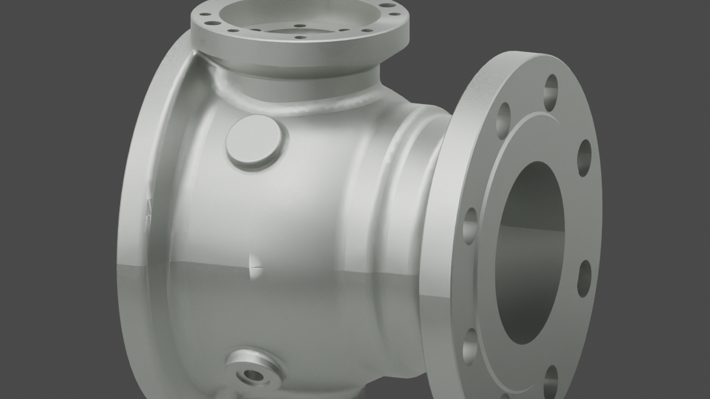
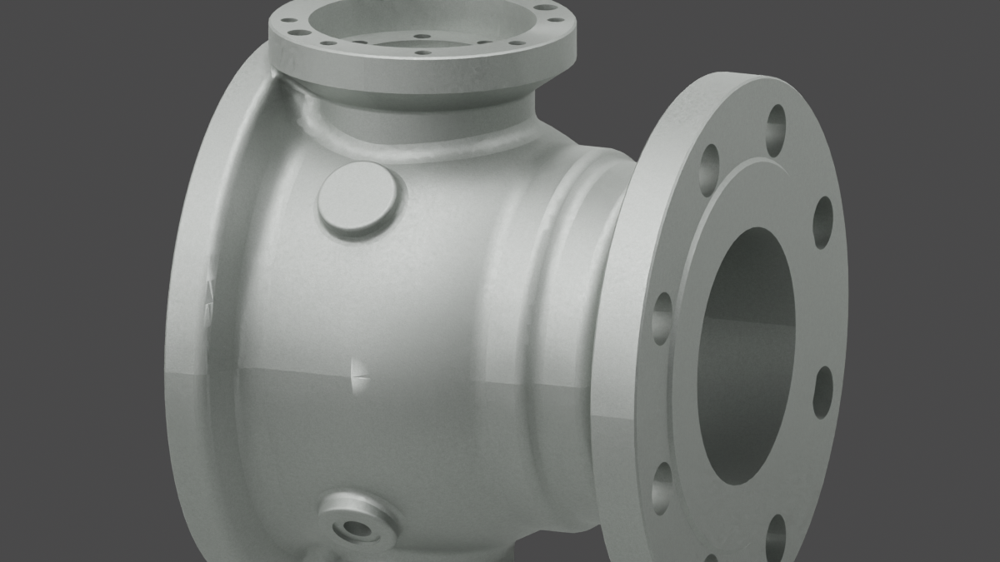

Goal 24 / isolated valve body / Blender Cycles
单独阀体不锈钢渲染矩阵
同一 STEP-derived 阀体 几何、同一断面视角、同一棚拍环境下，比较纯不锈钢与叠加粗粒磨砂后的材质差异。








Rows
- 纯不锈钢No procedural grit; only metallic base, roughness, anisotropy and studio reflections.
- 纯不锈钢 + 粗粒磨砂Same stainless base plus coarse roughness variation and bump texture.
Columns
- R0.24 bright controlledroughness 0.24, anisotropic 0.32
- R0.32 commercial satinroughness 0.32, anisotropic 0.46
- R0.40 industrial satinroughness 0.40, anisotropic 0.55
- R0.48 muted satinroughness 0.48, anisotropic 0.38